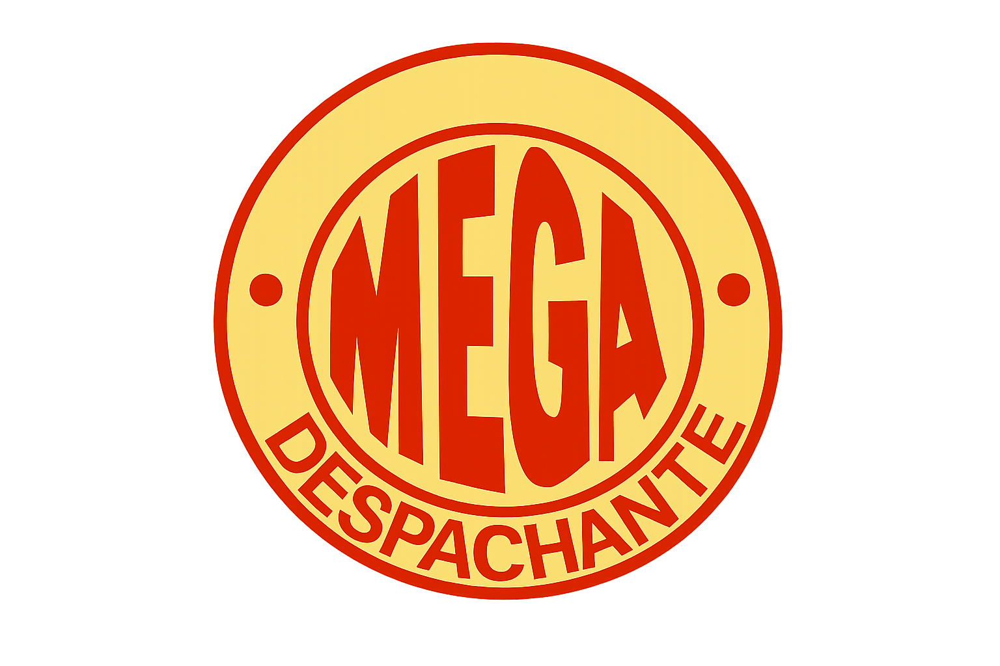
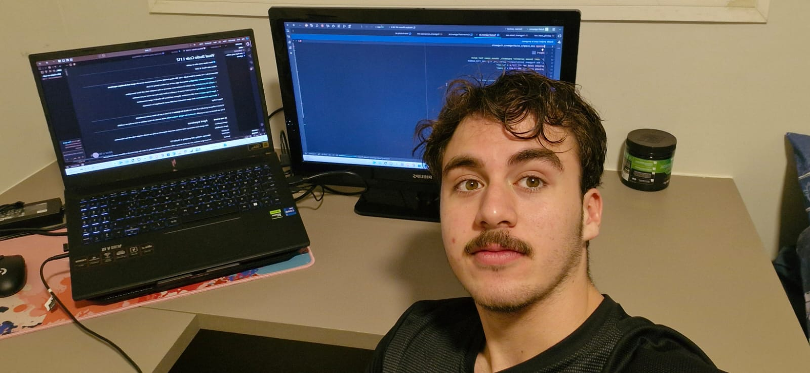

01
Sites institucionais
Uma presença digital com identidade, clareza e uma jornada que leva visitantes à ação.
Desenvolvimento digital sob medida
Criamos sites, sistemas e produtos SaaS que transformam ideias ambiciosas em experiências digitais claras, rápidas e prontas para crescer.
nos últimos 30 dias
01 / O ESTÚDIO
Na TURING DEV LV, tecnologia não é enfeite. É uma ferramenta para organizar operações, aproximar pessoas e abrir espaço para o seu negócio avançar.
02 / SOLUÇÕES
Escolhemos a melhor forma de transformar seu objetivo em um produto digital consistente.
Uma presença digital com identidade, clareza e uma jornada que leva visitantes à ação.
Produtos por assinatura desenhados para resolver problemas reais e evoluir com sua operação.
Ferramentas internas, dashboards e automações que colocam ordem no que hoje toma tempo.
03 / PARCEIRO EM DESTAQUE

Para a MEGA Despachante, transformamos a presença digital em uma plataforma prática: clientes preenchem informações, geram documentos e resolvem tarefas de PDF sem sair do site.
Conhecer o projeto ↗Campos preenchidos pelo cliente e PDF gerado automaticamente.
Unir PDFs, converter imagens e comprimir arquivos em poucos passos.
Menos tarefas repetitivas para a equipe. Mais autonomia para o cliente.
03 / COMO TRABALHAMOS
Ouvimos seu contexto, metas e obstáculos antes de propor qualquer solução.
Traduzimos estratégia em fluxos, interface e uma base técnica bem pensada.
Desenvolvemos com acompanhamento próximo, entregas visíveis e comunicação direta.
Colocamos no ar e seguimos lado a lado para melhorar o que importa.
04 / NOSSA EQUIPE
Por trás de cada tela existe gente de verdade. A gente gosta de ouvir, conversar sem complicar e ter paciência para entender o que o seu negócio precisa antes de escrever uma linha de código.

Vamos construir algo relevante
Conte um pouco sobre a sua ideia. A gente encontra o caminho tecnológico mais inteligente para ela.